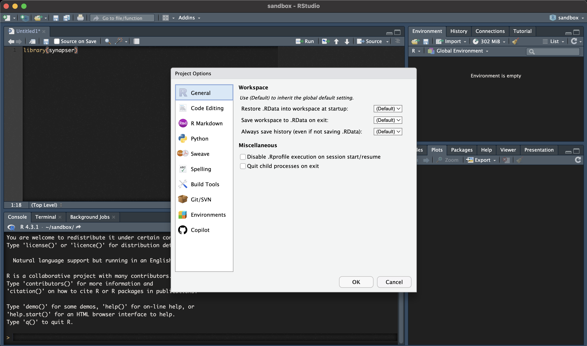
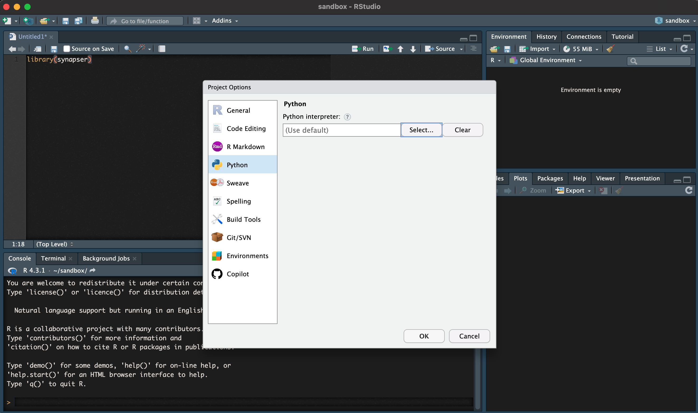
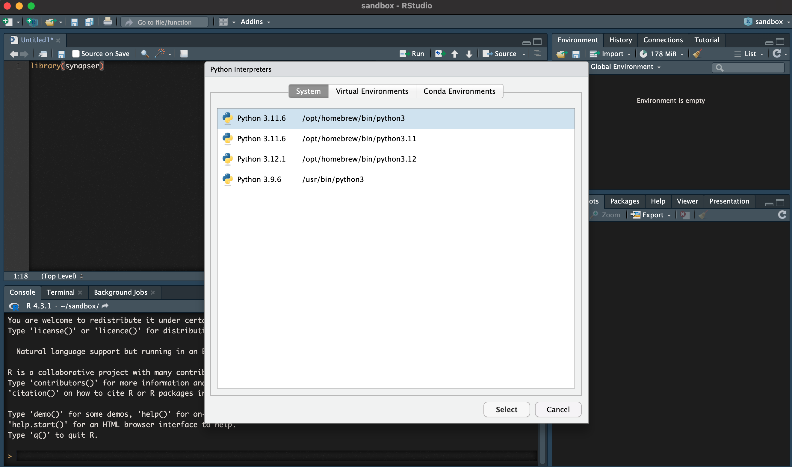
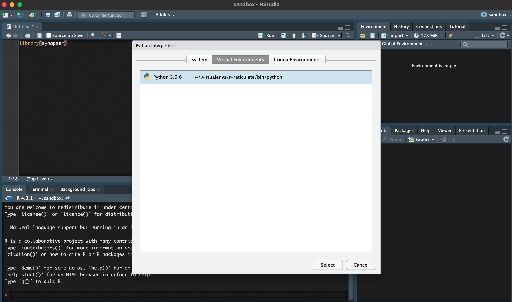
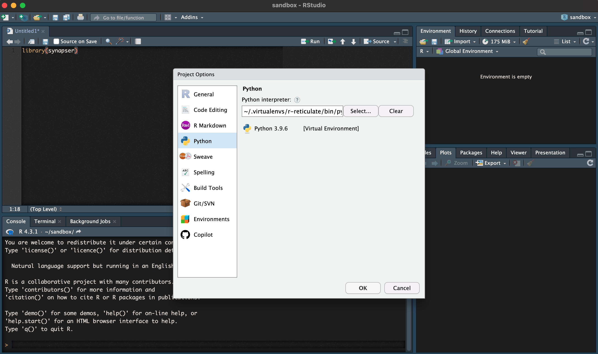

Installation
2026-10-01
installation.RmdSynapser is a wrapper around the Python client. Due to this, there are some complexities in installing the package. Please follow this guide.
Prerequisites
- R 4.2.0 or later (R 4.1.x is not supported: it is the last Windows R with 32-bit multiarch, and reticulate 1.44.0 or later does not build for 32-bit Windows)
- reticulate 1.44.0 or later (earlier versions are incompatible with
uv 0.8.0 and later, and fail with
could not find a Python environment for /)
When synapser is loaded, it declares its Python requirement
(synapseclient[pandas], pinned to the version synapser
wraps) via reticulate::py_require(). If reticulate does not
find another Python configured on your machine, it uses uv to download a compatible Python
and the Synapse Python client into a managed environment, so you
DO NOT need to install Python yourself. synapser
supports Python 3.10 to 3.14 and does not request a specific one, so
reticulate picks its own default: two minor versions behind the newest
stable release (Python 3.12 as of reticulate 1.46.0). Run
reticulate::py_config() to see which version you got. The
first load may take a minute; later loads reuse the cached
environment.
By default, reticulate only uses this managed environment when no other Python takes precedence in its Order of Discovery. In particular, synapser will use a different Python if any of the following apply:
- The
RETICULATE_PYTHONorRETICULATE_PYTHON_ENVenvironment variable is set (this includes selecting a Python interpreter in RStudio’s Project or Global Options). - A Python virtual environment is activated (
VIRTUAL_ENVis set), or your working directory contains a.venv,venv, or similar virtual environment. - A virtual environment named
r-reticulateexists (for example,~/.virtualenvs/r-reticulate, created by earlier versions of these instructions).
In those cases synapser installs the Synapse Python client into that
Python, which must be version 3.10 to 3.14. To use the managed
environment instead, remove the conflicting setting,
e.g. reticulate::virtualenv_remove("r-reticulate"), and
restart R. You can check which Python synapser is using with
reticulate::py_config().
Install SynapseR from GitHub
The synapser source code is on GitHub at Sage-Bionetworks/ synapser. In stalling from GitHub is useful if you want to try changes t hat have not been released to the Synapse R repository (RAN ) yet. For everyday use, install a released version from RA N as shown above.
-
Install the
remotespackage if you don’t already h ave it:if (!require("remotes", quietly = TRUE)) { install.packages("remotes") } -
Install synapser from GitHub. Without a
ref, this installs the default branch,develop, which contains the latest development changes:remotes::install_github("Sage-Bionetworks/synapser") -
Optionally, install a specific branch or release by passing
ref:# The latest release remotes::install_github("Sage-Bionetworks/synapser", ref = "master") # A specific release, by its tag (for example, 2.1.5) remotes::install_github("Sage-Bionetworks/synapser", ref = "3.0.0") -
Restart R, then load synapser to confirm the install ation:
library(synapser) packageVersion("synapser")
Install R
- Install R v4.2.0 or later
- Download links
- For macOS users, you can select a mirror and download R here
- For Windows and Linux users, you can select a mirror and download R here NOTE: R 4.1.x and earlier are not supported. On Windows, R 4.1.x is the last release with 32-bit multiarch, which the required version of reticulate cannot build for.
- Download links
- Install RStudio Desktop
- For Windows users, if you intend to run the project from outside RStudio Desktop
(for example: VS Code or Terminal) the only additional step is to add R
to system path:
C:\Program Files\R\R-4.2.0\bin\R.exe
SynapseR Installation (WIP)
Install from RStudio
- This guide assumes you have Python, R, and RStudio Desktop installed as described above.
- This guide will presume most users want to install and work with Synapse from RStudio Desktop.
Once that’s complete, we are ready to move on to selecting our desired Python interpreter. If the above fails, follow the steps below, then run the installation.
- Select your project’s desired Python interpreter
To select our desired Python interpreter, let’s navigate to Tools > Project Options (or Global Options)

- Let’s select Python from the list of options on the left hand side:

- Click Select

- Select the Virtual Environments tab:

- Click on Select to choose our desired Reticulate virtual environment:

In the example above, we can see that my desired Python 3.9.6 environment (your python version may be different, and that’s ok) installed from the official Python installer and NOT the Python version that shipped on macOS - is selected.
Install from R
Step-by-Step Installation with Dependency Management
Below are step-by-step instructions for installing synapser using Python 3.10. If you followed the pyenv installation above, these steps will use your pyenv-managed Python. If you’re using a system Python installation, ensure it’s Python 3.10.
Prerequisites: Verify Python Installation
If using pyenv (recommended):
# This is a bash session - Not R code
# Verify pyenv is working and Python 3.10 is installed
pyenv versions
python --version # Should show Python 3.10
pyenv versionIf using system Python:
R Installation Steps
-
Remove existing reticulate virtual environment (provides a clean environment for installation):
# Remove any existing virtual environment reticulate::virtualenv_remove(envname='r-reticulate') -
Create a virtual environment using your Python 3.10 installation:
If using pyenv (recommended):
# This will use the pyenv-managed Python 3.10 # You must replace '3.10.x' with the specific version you installed, e.g., '3.10.18' reticulate::virtualenv_create(envname='r-reticulate', version = '3.10.x')If using system Python 3.10:
# Specify the system Python path explicitly python_path <- Sys.which("python3") reticulate::virtualenv_create(envname='r-reticulate', python = python_path) -
Install synapser using remotes (this will automatically handle dependency versions):
For the latest version:
# Install remotes if not already installed if (!require("remotes", quietly = TRUE)) { install.packages("remotes") } reticulate::use_virtualenv("r-reticulate", required = TRUE) # Install the latest version of synapser (handles compatible dependency versions automatically) remotes::install_cran("synapser", repos = c("http://ran.synapse.org", "https://cloud.r-project.org"))For a specific version:
# Install remotes if not already installed if (!require("remotes", quietly = TRUE)) { install.packages("remotes") } reticulate::use_virtualenv("r-reticulate", required = TRUE) # Install a specific version of synapser (e.g., version 2.1.1.259 - major.minor.patch.build) remotes::install_version("synapser", version = "X.Y.Z.AAA", repos = c("http://ran.synapse.org", "https://cloud.r-project.org"))Installing from source:
reticulate::use_virtualenv("r-reticulate", required = TRUE) remotes::install_local(path=".", upgrade = "never") -
If you previously pinned
rjsonorreticulatefor synapser 2.x, undo those pins. synapser 3.0.0 works with current versions of both, and it requires reticulate 1.44.0 or later —reticulate1.28 will break it:install.packages(c("rjson", "reticulate")) packageVersion("reticulate") # must be >= 1.44.0Then try step 3 again.
Alternative Simple Installation
If you don’t have dependency conflicts, you can try the simple installation:
install.packages("synapser", repos = c("http://ran.synapse.org", "https://cloud.r-project.org"))Troubleshooting
- If you get an error while building the project that it cannot find
synapseclient module. This is because RStudio is using the wrong python
version. To get RStudio Desktop to
build the package correctly, navigate to Tools > Project Options >
Python > Virtual Envs and select the first entry
~/.virtualenvs/r-reticulate(or Conda if that’s your preferred Python virtual env) and perform the below step. R-Studio will re-create a virtual environment at that path using the correct Python version. Manually specifying python at the official installation path doesn’t always fix it. - If you have already tried building the project with an older version
of Python, make sure to remove
~/.virtualenvs/r-reticulatebefore re-building (it will be re-created). - If you halt the build process, a lock file might be left behind,
which will need to be manually deleted
(
$HOME\AppData\Local\R\win-library\4.2\00LOCK-synapser) - macOS ships with Python by default - Python 3.8 or Python 3.9.6 at
the location
/usr/bin/python3 - but it doesn’t work well. - If you’re intending to run the project from terminal or VSCode on
Windows and forgot to add python to path, it can be added manually using
system environment variables:
C:\Users\USER\AppData\Local\Programs\Python\Python310\
(Optional) Managing Python
This step is optional, but recommended if you plan to use multiple Python versions or want full control over your Python environment. Most synapser users do not need pyenv unless they have special requirements. ## Option 1: Using pyenv (Recommended)
We strongly recommend using pyenv to manage Python
versions, as it provides better compatibility and easier version
switching. This is especially important for synapser, which requires
Python 3.10-3.14.
Find more information about pyenv here
Install pyenv
For macOS:
# Using Homebrew (recommended)
brew install pyenv
# Or using the automatic installer
curl https://pyenv.run | bashFor Linux (including Ubuntu/Amazon Linux):
# Install dependencies first
sudo apt-get update
sudo apt-get install -y make build-essential libssl-dev zlib1g-dev \
libbz2-dev libreadline-dev libsqlite3-dev wget curl llvm libncurses5-dev \
libncursesw5-dev xz-utils tk-dev libffi-dev liblzma-dev python3-openssl git
# Install pyenv
curl https://pyenv.run | bashFor Amazon Linux 2/RHEL/CentOS:
Configure pyenv
To make pyenv available permanently, you need to add it to your shell
configuration file. The temporary export command only works
for the current session.
Step 1: Determine your shell
echo $SHELL
# Common outputs:
# /bin/bash -> use ~/.bashrc or ~/.bash_profile
# /bin/zsh -> use ~/.zshrcStep 2: Add pyenv to your shell configuration file
For bash users:
# Add to ~/.bashrc (Linux) or ~/.bash_profile (macOS)
echo 'export PATH="$HOME/.pyenv/bin:$PATH"' >> ~/.bashrc
echo 'eval "$(pyenv init --path)"' >> ~/.bashrc
echo 'eval "$(pyenv init -)"' >> ~/.bashrc
# For macOS bash users, also add to ~/.bash_profile
echo 'export PATH="$HOME/.pyenv/bin:$PATH"' >> ~/.bash_profile
echo 'eval "$(pyenv init --path)"' >> ~/.bash_profile
echo 'eval "$(pyenv init -)"' >> ~/.bash_profileFor zsh users:
# Add to ~/.zshrc
echo 'export PATH="$HOME/.pyenv/bin:$PATH"' >> ~/.zshrc
echo 'eval "$(pyenv init --path)"' >> ~/.zshrc
echo 'eval "$(pyenv init -)"' >> ~/.zshrcAlternative: Manual editing You can also manually edit the configuration file:
Then add these lines to the file:
Step 3: Apply the changes
# Reload your shell configuration
source ~/.bashrc # for bash on Linux
source ~/.bash_profile # for bash on macOS
source ~/.zshrc # for zsh
# OR restart your terminalStep 4: Verify pyenv is working
Install and set Python 3.10
# List available Python versions
pyenv install --list | grep " 3\.10"
# Install Python 3.10 (recommended version)
pyenv install 3.10
# Set as global default (optional)
pyenv global 3.10
# Or set as local for your project directory
cd /path/to/your/project
pyenv local 3.10
# Verify installation
python --version # Should show Python 3.10
pyenv versionOption 2: Official Python Installer (Alternative)
If you prefer not to use pyenv, you can install Python from the official installers:
-
Install Python from one of the official Python installers - version 3.10 to 3.14 and remove other versions of Python except for the one that ships with macOS located in
usr/bin/python(note for windows: make sure to add Python to path if you’re planning on running the project from outside RStudio, for example from terminal). TIP: You can verify which version you have with….% which -a python3 /usr/bin/python3 # <- Default Python shipped with macOS % which -a python3 /usr/local/bin/python3 # <- Official Python installer (3.11.1 for me) /usr/bin/python3 # <- Default Python shipped with macOSmacOS ships with Python by default - Python 3.8 or Python 3.9.6 at the location /usr/bin/python3 - but it doesn’t work well.
Only the official installer versions work. Seriously. Please do yourself a favor and avoid having a very long, sad day because you insisted on using the version that shipped with macOS by default.